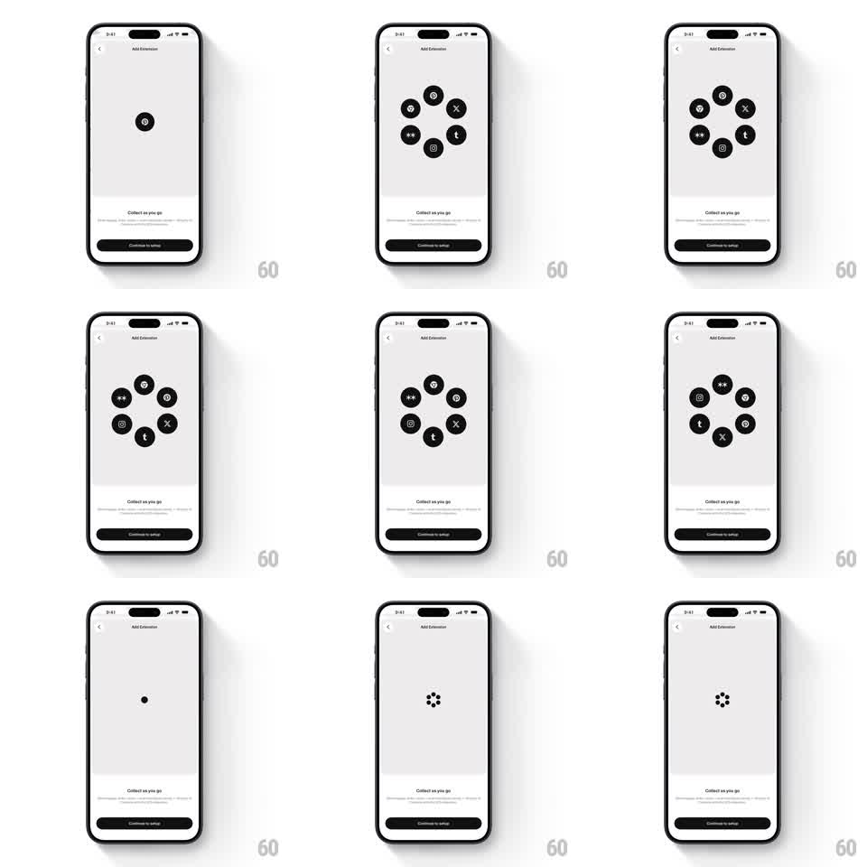

Media
Frame-by-frame

Rebuild this animation 1:1: Cosmos's add-extension screen - a lone dot blooms into a ring of social logos that rotates slowly, then collapses back to a dot on a light-grey stage above the fixed Collect as you go copy.

Rebuild this animation 1:1: Cosmos's add-extension screen - a lone dot blooms into a ring of social logos that rotates slowly, then collapses back to a dot on a light-grey stage above the fixed Collect as you go copy. ## Integration Integration: stack-agnostic spec - springs given as stiffness/damping, timed motions as duration + curve; map every value to your framework and animation library of choice. ## Scene Light-grey screen: back chevron and "Add Extension" title up top, an empty stage center where the logo ring lives, and a bottom block with "Collect as you go" copy plus a dark "Continue to setup" button. ## Motion spec Pattern: dot-to-ring expansion, slow orbit, collapse to spinner. - A single small dot scales up and splits into 6 circular logo badges (Pinterest, X, Threads, Instagram, and peers) that fly out to ring positions (spring ~280/16, 30ms stagger between badges). - The ring rotates continuously (~20s per revolution, linear); badges counter-rotate so each logo stays upright. - Badges breathe gently on the ring (scale 0.95 -> 1.05, 3s, phase-offset). - On advance, the ring contracts back into the center dot (250ms, ease-in), which becomes a small loading spinner (petal dots chase, 800ms loop). ## Calibration - Badges are flat dark circles with white glyphs - monochrome, no brand colors. - The expansion is the delight: fast, springy, one overshoot. ## Reduced motion Badges fade in at ring positions; rotation pauses; collapse crossfades. ## Don't miss - Logos stay upright while orbiting - counter-rotation is mandatory. - The bottom copy and button never move; the stage is the only playground.